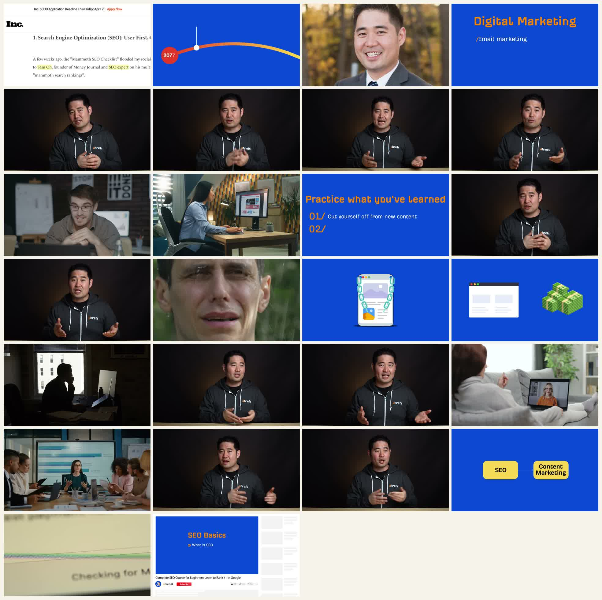
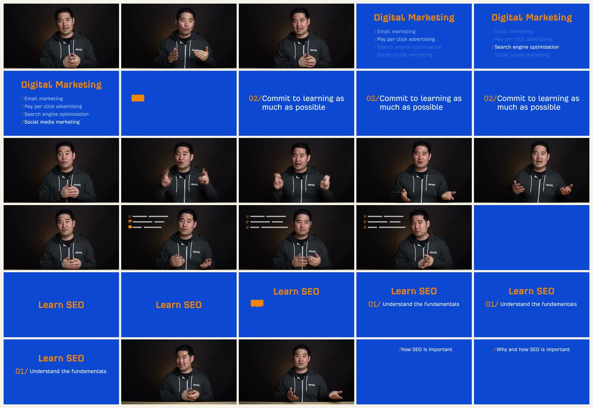
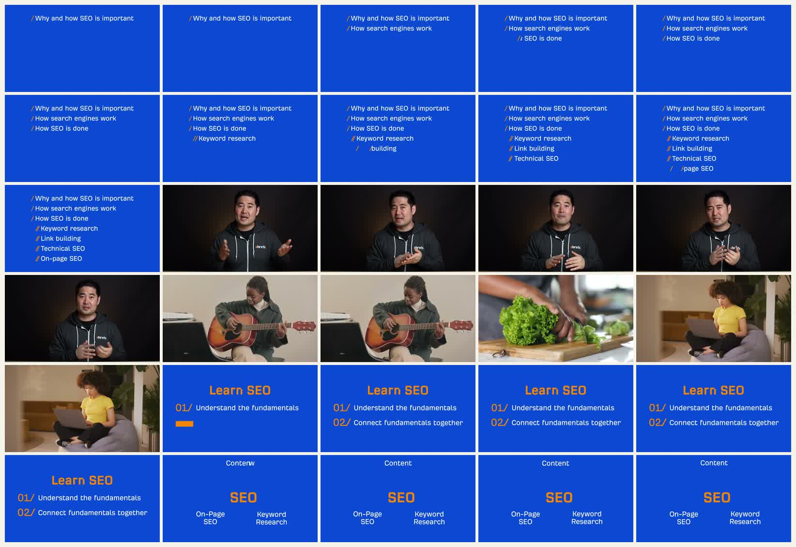
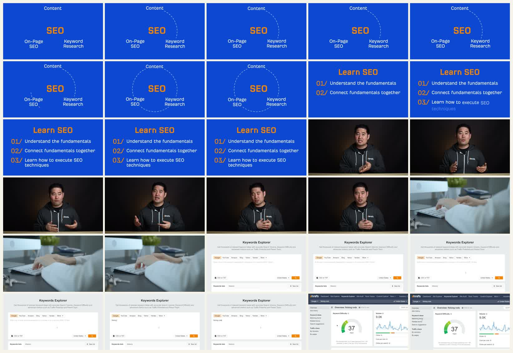
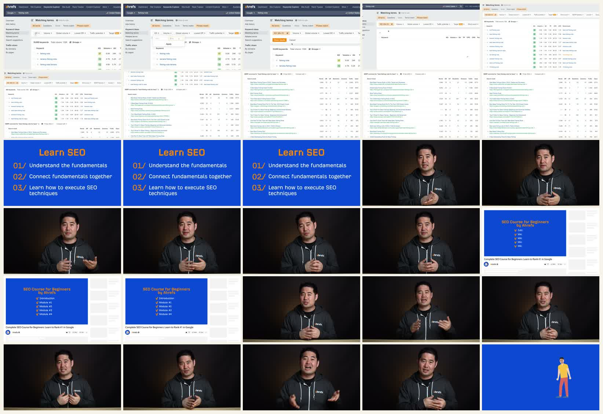
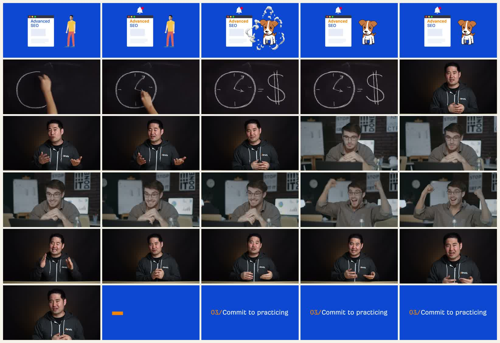

Ahrefs 短片拉片：不是录屏教程，而是出镜型 Presentation Explainer
对象：Ahrefs《How I Would Learn Digital Marketing (If I Could Start Over)》。全片 12:54。用户给的时间点是 2:18，但本次先粗看全片，再决定精拉范围。
原视频
一、先看全片粗抽帧
这一张图按 30 秒抽一帧。从左到右、从上到下看，可以看到全片主要不是 Ahrefs 工具录屏，而是以讲师出镜为主轴，中间插入蓝底图卡、stock/B-roll、少量工具界面和课程导流。

点击查看原图。空白格是因为视频只有 12:54，不满最后一行。
| 时间 | 内容段落 | 主要画面模式 | 作用 |
|---|---|---|---|
| 0:00-2:00 | 个人经历：14 年数字营销经验、创业、早期失败、选择 SEO。 | 网页截图、年份曲线、人物照片、讲师出镜。 | 建立可信度和故事钩子，不急着进入工具操作。 |
| 2:00-4:30 | 如果重来，先选一个数字营销方向，然后系统学习基础。 | 蓝底图卡、模块关系图、少量 Keywords Explorer 录屏、课程页面。 | 全片最像 explainer 的段落：把建议拆成路径、模块、执行示例。 |
| 4:30-6:30 | 停止只看内容，开始练习；找实战环境。 | 蓝底 checklist、讲师出镜、工作场景 B-roll。 | 把抽象建议落到行动，但视觉仍是 presentation 风格。 |
| 6:30-8:30 | 避免捷径：讲自己因为灰帽 SEO / PBN 受损的失败经历。 | 讲师出镜 + 情绪化 B-roll。 | 用反面故事制造记忆点。 |
| 8:30-10:00 | 建立关系：同伴、尊重的业内人士、邮件/DM。 | 讲师出镜、远程会议和团队 B-roll。 | 从技能学习转向职业网络。 |
| 10:00-12:54 | 下一步三种路线：generalist、niche down、expand horizontally。 | 讲师出镜、蓝底标签卡、课程推荐。 | 收束为职业路径建议，最后导向 Ahrefs SEO 课程。 |
为什么精拉 2:00-4:30：这段同时出现“蓝底图卡、概念列表、模块关系图、真实工具界面、讲师承接”，最能体现 Ahrefs 这类短 explainer 如何把观点变成可理解的学习路径。
二、2:00-4:30 细抽帧

2:00-2:29：从讲师出镜切到 Digital Marketing 方向列表，再进入 Learn SEO。

2:30-2:59：SEO 基础清单逐行出现，穿插 B-roll 降低图卡疲劳。

3:00-3:29：用圆形虚线把 Content、SEO、On-page、Keyword Research 连起来，然后切到工具界面。

3:30-3:59：Keywords Explorer 真实界面快速演示，然后回到学习路径卡和讲师。

4:00-4:29：用 Advanced SEO + 狗的轻插画讲“追高级内容”的误区，转入下一节 practice。
三、精拉段落拆解
| 时间 | 旁白语义 | 画面设计 | 运动方式 | 值得学什么 |
|---|---|---|---|---|
| 2:00-2:12 | 先选一个数字营销方向，不要什么都学。 | 讲师出镜承接，随后切蓝底 “Digital Marketing” 分类卡。 | 列表项逐行出现，当前项高亮，其他项降低透明度。 | 用“可选项列表”把抽象选择变得可视化，观众马上知道这不是泛泛而谈。 |
| 2:12-2:26 | 第二步：尽可能多地学习。 | 蓝底大标题 “02 / Commit to learning as much as possible”。 | 从空蓝底到标题卡，文字居中稳定停留。 | 章节卡非常简单，但节奏清楚：每个大建议都有视觉 reset。 |
| 2:26-2:54 | 学习 SEO 时，先理解基础：为什么重要、搜索引擎如何工作、SEO 如何做。 | “Learn SEO” 卡 + 三条基础清单，逐步补全。 | 编号和条目依次显现，讲师出镜和 B-roll 插入作为呼吸点。 | 这是 presentation explainer 的核心：不是每句话都画新图，而是让同一张卡逐步长出来。 |
| 2:54-3:18 | 基础之间是互相关联的，比如内容、关键词、on-page SEO。 | 蓝底概念图：中间 SEO，周围 Content / On-page / Keyword Research。 | 虚线圆弧逐步围合，暗示模块互相连接。 | 这比单纯列 bullet 更高级：关系图把“知识点之间有关联”这句话变成画面。 |
| 3:18-3:42 | 然后学习具体技术，比如关键词研究、筛选、看 SERP。 | 从概念图切到 Ahrefs Keywords Explorer 真实界面。 | 界面录屏快速输入、切换、筛选；没有复杂标注，靠界面本身证明“这是实操”。 | 好用的转场：先解释概念结构，再给一眼真实工具，观众不会觉得只是 PPT。 |
| 3:42-4:10 | 推荐 Ahrefs 的 SEO 课程，但不要沉迷所谓 advanced 内容。 | YouTube 课程页面作为背景，蓝底课程卡叠在上面。 | 课程模块列表勾选出现，然后回讲师。 | 导流不是硬贴广告，而是接在“学习路径”后面，语义上顺。 |
| 4:10-4:30 | 很多人会被 Advanced 吸引，浪费时间。 | 蓝底插画：Advanced SEO 页面、通知铃、狗；随后切黑板公式和夸张 B-roll。 | 狗用 pop 出现，黑板手绘、B-roll 情绪化。 | 在严肃教程里加入轻幽默，承担“打断单调节奏”的功能。 |
四、这条视频的风格判断
不是纯 Screencast
真实工具界面只在 3:20-3:40 附近短暂出现。全片不是持续录屏讲操作，而是讲师驱动、图卡解释、少量界面作证。
不是纯 Motion Graphics
MG 主要负责章节、清单、关系图和轻插画。它不追求炫技，而是做信息分层。
更像 Presentation Explainer
核心像一套动态 PPT：讲师是主轴，蓝底卡是结构，B-roll 是节奏，工具录屏是可信度。
五、对 HyperFrames 复刻的价值
8/10复刻性价比
7/10视觉效果
9/10结构清晰度
6/10动画复杂度
| 模块 | HyperFrames 复刻方式 | 难度 |
|---|---|---|
| 讲师出镜 | 如果没有真人素材，可换成旁白 + 少量头像/身份卡；不要强行生成假人。 | 中 |
| 蓝底章节卡 | HTML/CSS 直接做，固定蓝橙配色、等宽感标题、编号。 | 低 |
| 列表逐步展开 | GSAP stagger 或 data-start 分段显现；当前项高亮，非当前项降透明。 | 低 |
| 模块关系图 | SVG 圆弧、虚线 stroke-dashoffset 动画；节点只保留 3-4 个。 | 中 |
| 真实工具界面 | 优先自动截图/录短片，再用 HyperFrames 做缩放、遮罩、框选和字幕。 | 中 |
| B-roll | 可用少量 stock 或截图替代；不要过多，否则自动化成本上升。 | 中 |
六、可提炼成模板的镜头语法
推荐模板：讲师/旁白提出观点 → 蓝底卡列出结构 → 关系图解释连接 → 真实界面证明可执行 → 回到讲师/旁白给判断。
| 镜头语法 | 适合表达 | 注意 |
|---|---|---|
| 蓝底大标题卡 | 章节转换、观点落点、编号步骤。 | 不要塞满文字。标题 + 1 行短句即可。 |
| 同一张卡逐步长出来 | 清单、步骤、学习路径、框架。 | 每次只增加一个信息单位，避免一屏全上。 |
| 关系图短暂停留 | 模块之间的连接、因果链、依赖关系。 | 关系图不要复杂。Ahrefs 这里也只用了 4 个词。 |
| 工具界面闪证据 | 证明“这不是概念，而是真的能操作”。 | 不必录完整流程，截关键操作即可。 |
| B-roll 呼吸 | 降低图卡疲劳，制造情绪和生活感。 | B-roll 不能替代信息，只能调节节奏。 |
七、结论
这条短片适合我们学习的不是“录屏高亮”，而是低成本 presentation explainer 的成熟结构。它把真人讲解、PPT 式图卡、少量真实工具界面和 B-roll 拼成一条稳定生产的内容模板。
如果用 HyperFrames 复刻，最值得先做的是 2:00-3:40 这段：蓝底列表、章节卡、关系图、工具界面切换。这一段足够短，语义完整，且动画复杂度可控。